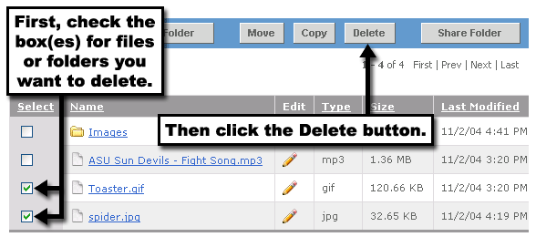
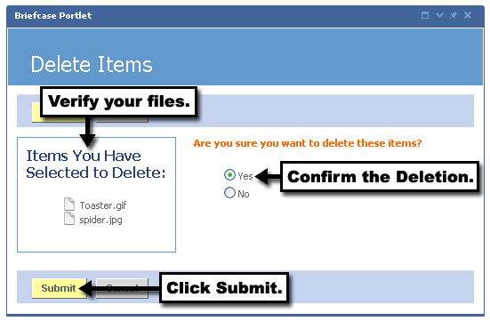

You can easily delete files or folders from the Briefcase Portlet. To do so, simply locate the folder or file you'd like to delete, and follow these steps:

3. Verify that your items are now in the left column in the list of Items You Have Selected to Delete.
4. Click the Yes radio button to confirm the deletion.
5. Click the Submit button.
You should now see that your items have been deleted.
